About the Tool Cart
I started this project the summer before my junior year of high school to solve a problem for my robotics team: tools were scattered around the workspace, and moving our heavy robot by hand was a hassle. I designed an all-in-one workstation to organize tools and materials while lifting and holding FIRST Robotics Competition robots at a useful working height.
The cart includes a large tool-storage box and two fold-out tabletop extensions for extra workspace. More than three and a half years later, it is still serving my former team at competitions without issue.
From CAD to a working lift
I designed the cart completely in Onshape before moving on to testing and fabrication. Most of the structure uses 80/20 T-slot extrusions, chosen for their strength and ease of assembly. Two pairs of linear rails guide the lift through a 26.5-inch vertical range.
A 2,000-pound electric winch sits in the lower storage area of the toolbox section. A pulley system converts the winch’s rotation into the lift’s vertical travel. Fabrication involved cutting and drilling the extrusions, machining intricate lifting-assembly components, and experimenting with flexible TPU filament for select parts, including a stabilizing support leg.
To control cost, I moved away from an initial X-shaped lift concept to a simpler single-support design. I tested the assembled cart progressively with added weight, exceeding 250 pounds to check its stability and strength.
Rotating CAD view
Design & Build
CAD views, testing, assembly, and details of the completed workstation.
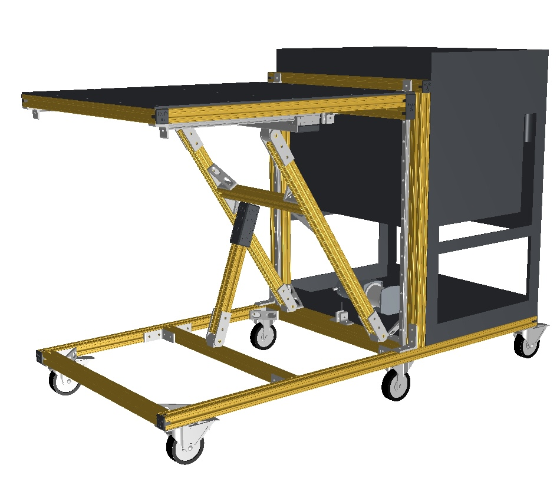
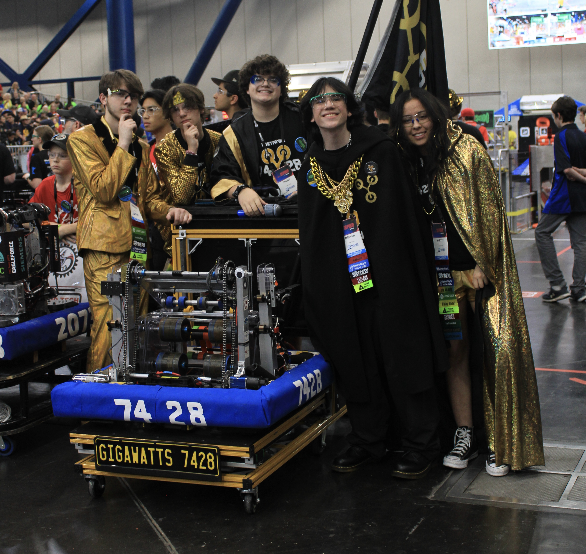
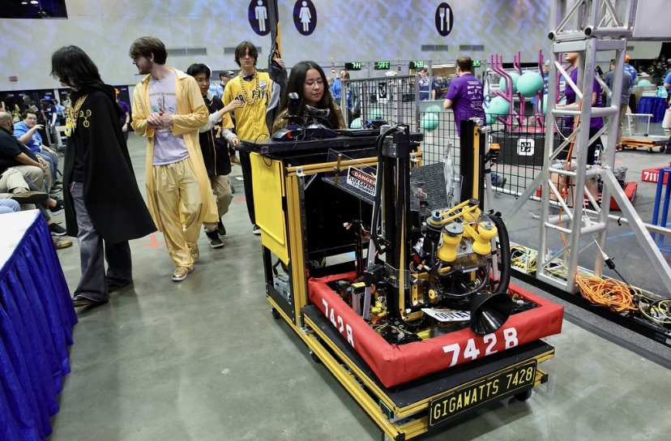
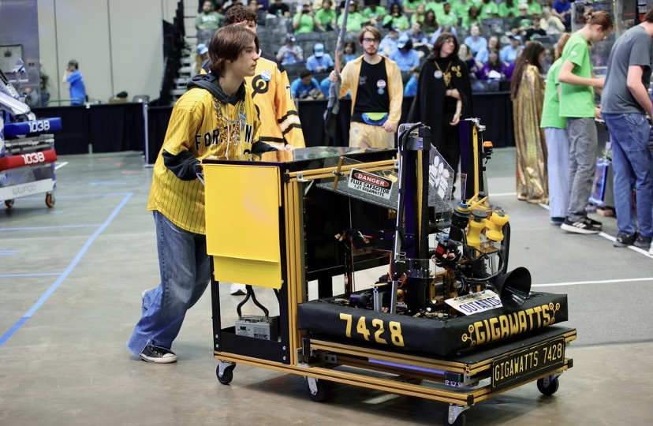
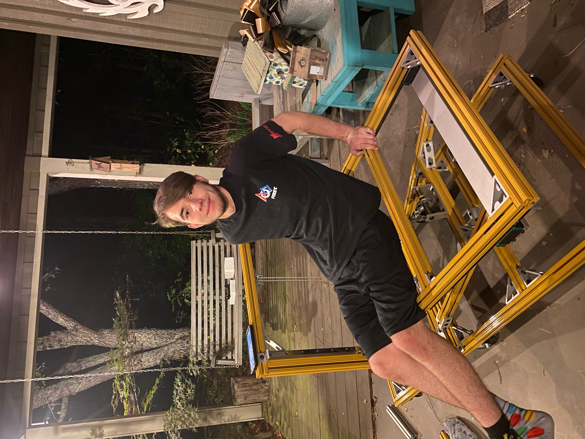
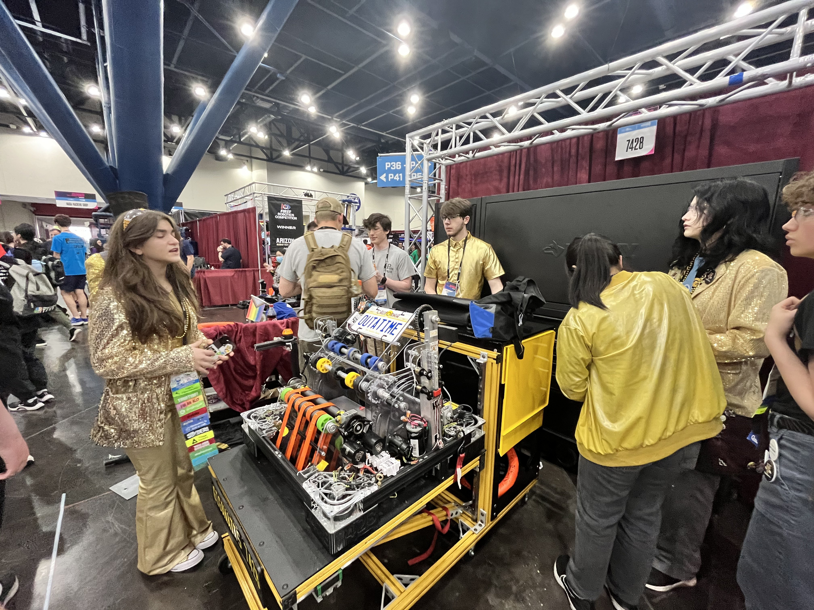
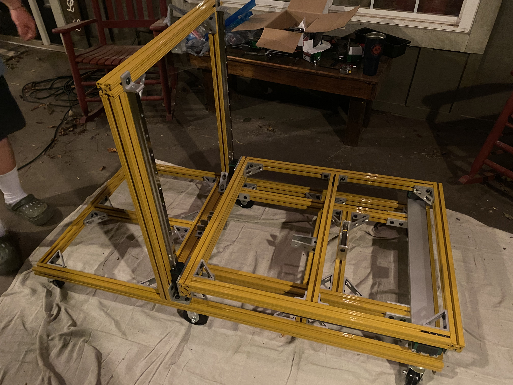
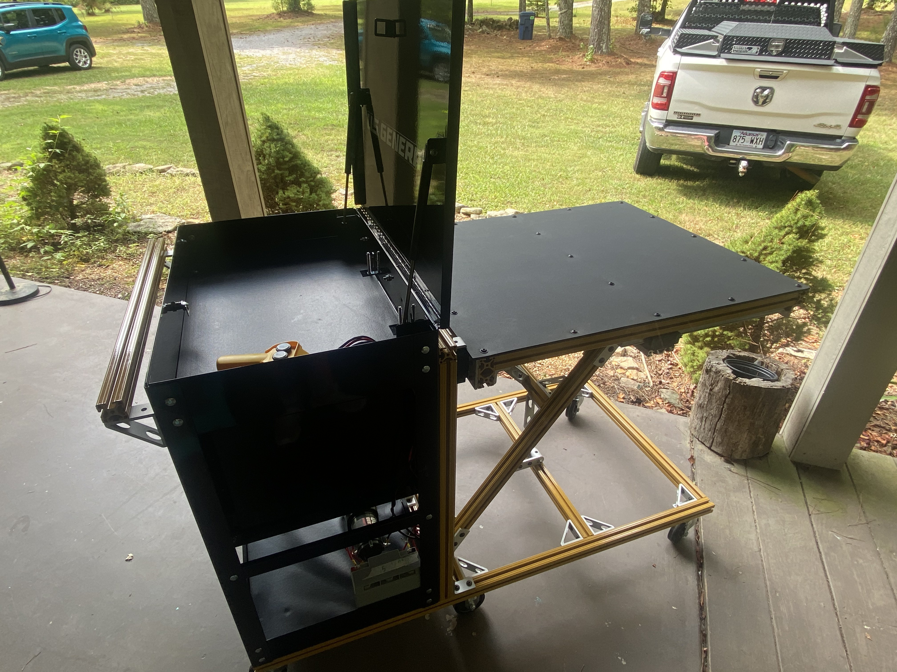
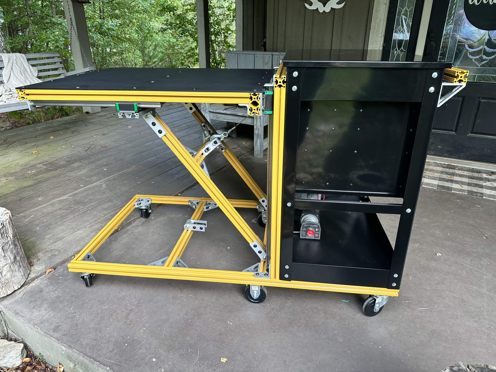
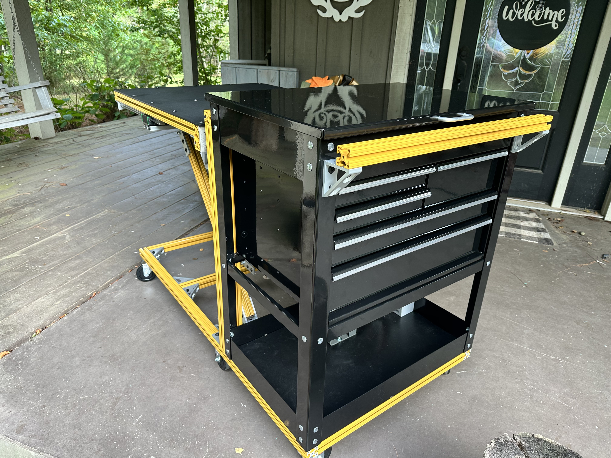
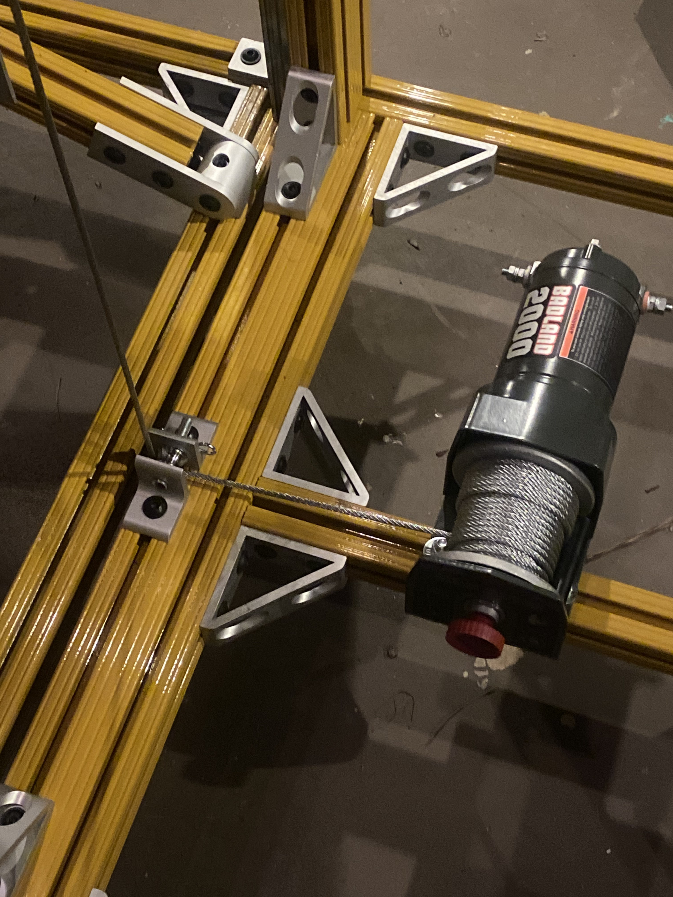